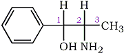

Abstract
Physical constants and instrumental data (melting point [mp], thin-layer chromatography [TLC] [Rf], gas chromatography [GC] [Rt], [α]D25, 1H- and 13C-NMR, infrared (IR), 70-eV, electron impact - mass spectroscopy [EI-MS], color, and microcrystalline tests) are reported for the individual stereoisomers, racemates, and corresponding hydrochloride salts of 4-methylaminorex (2-amino-4-methyl-5- phenyl-Δ2-oxazoline, 4,5-dihydro-4-methyl-5-phenyl- 2-oxazolamine, McN-822, "U4Euh", "ICE"). The data allow identification and differentiation of illicit samples of 4-methylaminorex.
4-Methylaminorex (Fig. 1) (2-amino-4-methyl-5-phenyl-Δ2-oxazoline, 4,5-dihydro- 4-methyl-5-phenyl-2- oxazolamine, McN-822, "U4Euh," "ICE") is a potent anorectic1-3 and central nervous system stimulant2-8 possessing sympathomimetic9 hypertensive4, and norepinephrine potentiating10 properties. It has been observed with increasing frequency on the clandestine market11,12 and was recently controlled (Schedule I) under the emergency scheduling procedures of the Controlled Substances Act13,14.
The compound contains two chiral centers (C4 and C5); thus, there are four possible stereoisomers (trans-(4R,5R), trans-(4S,5S), cis-(4R,5S) and cis-(4R,5S)), and two racemates (dl-cis and dl-trans) (Fig. 2).
The individual stereoisomers and racemates are most conveniently synthesized via condensation of the respective 2-amino-1-phenyl- propanols with cyanogen bromide1 (Figs. 3 and 4). The stereochemistry of the starting material is maintained through the course of the reaction; thus, the erythro amino-alcohol (norephedrine) gives the corresponding cis-4-methylaminorex, the threo amino-alcohol (norpseudoephedrine) the corresponding trans product (Fig. 4; note: C1/C2 in the starting material corresponds to C5/C4 in the product).

Fig 3.
2-Amino-1-Phenylpropanol
Pharmacological studies have shown similar anorectic1,2 central nervous system stimulant4, hypertensive4, and norepinephrine potentiating10 activities regardless of stereochemistry. The racemic dl-cis free base is currently the most frequently encountered form in illicit samples of 4-methylaminorex3 and has been fully characterized in several reports12; however, only minimal physical data have been reported for any of the individual stereoisomers, the dl-trans racemate, or the corresponding hydrochloride salts.
Fig 4.
Stereochemical relationships between precursor 2-amino-1-phenylpropanols
(shown in Fisher and Newman projections) and product 4-methylaminorexes.
Experimental Procedures
All precursor chemicals were obtained from Aldrich and used without additional purification. All other chemicals used were reagent grade or better.
Melting points were determined using a Fisher-Johns melting point apparatus and are uncorrected. Thin-layer chromatograms were run on silica gel (Baker-flex Silica Gel IB-F, J. T. Baker 4-4463), alumina (Baker-flex Alumina IB-F, J. T. Baker 4-4467), and C18-reverse phase (Whatman MKC18F, 4803-110) thin-layer plates. Gas chromatographic (GC) analyses were performed on a Perkin-Elmer Sigma 2000 Capillary Chromatograph equipped with a DB-1 30-m by 0.25-mm capillary column coated with a 0.25-µm film thickness (JAW Scientific) and a flame ionization detector. Hydrogen was used as the carrier gas (linear velocity 4.65 cm/s). Specific rotations were determined using a Perkin-Elmer 241 MC Polarimeter; all rotations were measured in ethanol (EtOH) at 25�C using a 1-dm cell and the sodium D line (589 nm). 1H- and 13C-(NMR spectra were obtained in deuteriochloroform (CDCl3) or deuterium oxide (D2O) using a Bruker AM-300 WB NMR spectrometer (operating at 300 MHz for 1H and 75.5 MHz for 13C); tetramethylsilane (Me4Si) and dioxane were used as internal calibration standards (for samples in CDCl3 and D2O, respectively). 13C-NMR spectra were obtained in auto-recur mode (that is, a 35� pulse was utilized with a zero relaxation delay). Infrared (IR) spectra were obtained as KBr pellets using a Perkin-Elmer 1750 Infrared Fourier Transform Spectrometer; polystyrene was utilized as a calibration standard. High-resolution mass spectra (70-eV electron impact [EI]) were obtained using a Finnigan-MAT 8230 Mass Spectrometer (resolution = 7500; 5% valley). All samples were run using the solid-probe inlet.
Results and Discussion
Chemistry
Two of the six precursor 2-amino-1-phenylpropanols, dl-norpseudoephedrine and (1S,2S)-norpseudoephedrine, are (currently) commercially unavailable and were synthesized via a benzylic inversion route from racemic dl-norephedrine and (1R,2S)-norephedrine, respectively (Fig. 5)1.
Fig 5.
Benzylic inversion of (1R,2S)-norephedrine to (1S,2S)-norpseudoephedrine.
Brackets indicate nonisolated intermediates.
The individual enantiomers and racemates of 4-methylaminorex were synthesized via condensation of the respective 2-amino-1-phenylpropanols with cyanogen bromide1. Recrystallization (chloroform/carbon tetrachloride 1:1) gave the free bases as white, crystalline powders. The corresponding hydrochloride (HCl) salts were precipitated from chloroform/diethyl ether 1:1 solutions of the free bases with anhydrous HCl gas. Recrystallization (iPrOH/CHCl3/Et2O 1:1:1) gave five of the six hydrochloride salts as white crystalline powders; the racemic dl-trans hydrochloride salt is hygroscopic, however, and rapidly "melted" following isolation from the reaction mixture. The resulting oil slowly crystallized over four weeks and was eventually isolated as an amorphous solid.
The free bases are readily liberated from the hydrochloride salts by solution in the minimum volume of distilled water (H2O) followed by dropwise addition of excess saturated aqueous sodium carbonate (Na2CO3).
Melting Points
Melting points are presented in Table 1. In all cases, the melting ranges are unusually broad; that is, a gradual breakdown of crystal structure is observed over the final 15 to 20�C (sublimation evident), with complete dissolution occurring at the reported value. The close similarities between the diastereomeric cis and trans free bases (Δ=3�C) precludes differentiation via melting point except by mixed melting-point techniques15.
Table 1.
Melting points, retention times and specific rotation of cis- and
trans-4-Methylaminorex racemic mixtures and individual optical
isomers.
| Product Stereo- chemistry |
Precursor Stereo- chemistry |
Melting Pointa |
Rt (min)b |
[α]D25�
c |
||||||
| Free Base |
Hydrate | Lit. | HCl Salt |
Free Base |
HCl Saltd |
Free Base |
Lit. | HCl Salt |
||
| trans- (4R,5R) |
threo- (1R,2R) |
181- 182�C |
... |
... |
164- 166�C |
5.68 |
5.64 |
-6.0 |
... |
+50.2 |
| trans- (4S,5S) |
threo- (1S,2S)e |
182- 183�C |
... |
177.5- 179.5�Cf 181�Cg |
163- 166�C |
5.62 |
5.62 |
+6.0 |
-51.8 |
|
| dl-trans | dl-threoe | 150- 152�C |
... |
148- 150�Cf |
(132- 136�C)h |
5.67 |
5.62 |
... |
... |
... |
| cis- (4S, SR) |
erythro- (1R, 2S) |
177- 179�C |
182- 184�C |
181�Cg | 190- 192�C |
6.08 |
6.03 |
-244.7 |
-9.5g,i |
-116.8 |
| cis- (4R, SS) |
erythro- (1S, 2R) |
177- 180�C |
180- 183�C |
... |
188- 190�C |
6.04 |
6.05 |
+240.9 |
... |
+114.8 |
| dl-cis | dl-erythro | 139- 142�C |
155- 156�C |
154.5- 156�Cf |
178- 180�C |
6.10 |
6.04 |
... |
... |
... |
Notes:
- Recorded at 0.5�C/min increase.
Note: Except for the dl-cis-free base, capillary melting points are 5 to 10�C lower. - GC conditions: injector, 280�C; column, 140�C initial (held 1 min), programmed increase 4�C/min.
- Solvent: EtOH (all compounds). Reported values are the average of ten measurements; literature values are at 20�C. Hydrates were not measured.
- HCl salts undergo extensive thermally induced decomposition; see text.
Minor variations in Rt versus the free bases are within experimental error. - Currently commercially unavailable; see text.
- From Poos, et al.1.
- From Wollweber, et al.4.
- Reported value is of the amorphous hydrated salt; see text.
- Literature value is incorrect; see text.
The reported melting point for the racemic dl-cis free base (139-142�C, Table 1) does not agree with the original literature (154.5-156�C1). The racemic dl-cis-d2 analogue was reported to be hygroscopic16; however, recrystallization from refluxing toluene with azeotropic removal of H2O gave crystals with the same melting point (indicating that the prepared compound does not contain water of hydration). Recrystallization from boiling water, however, gave crystals with a melting point of 154-155�C. Chromatographic and spectroscopic evidence confirmed the structure as the hydrate. The individual cis enantiomers also give hydrates with slightly higher melting points (Table 1) from boiling water; however, the trans isomers did not give hydrates.
Interestingly, the crude free bases (precipitated from aqueous solutions by addition of aqueous base) are the anhydrous form - only cis products recrystallized from boiling water form hydrates. Several illicit samples of racemic cis-4-methyl-aminorex analyzed in this lab all gave melting points of approximately 140�C.
Thin-Layer Chromatography
Table 2.
Thin-Layer Chromatography Rf Values
| Stationary Phase | Solvent Systema |
Free Bases |
|
trans- (4R,5R) |
cis- (4S,5R) |
||
| Silica gel IB-F | I |
0.42 |
0.40 |
II |
0.57 |
0.50 |
|
| Alumina IB-F | I |
0.55 |
0.51 |
II |
0.66 |
0.64 |
|
| C18-reverse phase | III |
0.59 |
0.59 |
a Solvent systems:
I. EtOAc/EtOH/NH4OH - 86:10:4
II. NH4OH sat'd CHCl3/MeOH - 9:1
III. i-PrOH/H2O/NH4OH - 72:24:4
The diastereomeric cis and trans free bases are marginally resolved on silica gel and alumina and unresolved on C18-reverse-phase thin-layer plates (the hydrochloride salts give multiple spots and streaking on all three stationary phases). Rf values for three different solvent systems giving optimal development (0.4 to 0.7) are presented in Table 2. The more symmetrical (less polar) trans isomer migrates slightly faster on both silica gel and alumina; the most favorable resolution was observed on silica gel using an ammonium hydroxide- saturated chloroform/methanol 9:1 eluting solvent.
{kind=link}
Gas Chromatography
The diastereomeric cis and trans free bases are sufficiently resolved for differentiation by capillary GC (Fig. 6). Retention times (Rt) are presented in Table 1. The more symmetrical (less polar) trans isomers elute prior to the cis isomers.
The hydrochloride salts undergo extensive thermally induced decomposition and give a more complex chromatogram; the free bases are, however, still apparent in the chromatogram (Fig. 6). Programmed injector port temperatures (from 75 to 280�C) only marginally improved performance.
Specific Rotation
The enantiomeric free bases and hydrochloride salts can be differentiated via specific rotation. Values are reported in Table 1. All compounds were determined in EtOH at 25�C using a 1-dm cell and the sodium D line (589 nm). The reported specific rotation for the cis-(4S,5R) free base ([α]D25 = -244.7�, Table 1) does not agree with the original literature ([α]D20 = -9.5�4); however, the latter value is incorrect. The reported rotations were scaled up from measurement (to three decimal places) of dilute solutions of differing concentrations - as the magnitudes of rotation for the enantiomers are internally self-consistent, that is, equal and opposite (+240.9 versus -244.7�, Table 1), the values are accurate. (The error in the original article is most likely due to measurement off-scale, that is, not -9.5 but rather -369.5�, a reasonable explanation in view of the high concentration (1 g/mL) used for the measurement4.)
NMR Spectroscopy
![[Enlarge]](pictures/4mar.fig8a.gif){kind=link}
![[Enlarge]](pictures/4mar.fig7a.gif){kind=link}
The 1H-NMRs of the diastereomeric cis and trans free bases display significant variations in both chemical shifts (δ) and scalar coupling constants (J) (Fig. 7, Table 3). The most marked difference in chemical shift is observed with the 4-methyl substituent (δ cis = 0.73 ppm versus δ trans = 1.33 ppm); in the cis isomers, the methyl group lies within the shielding zone of the phenyl ring and is shifted 0.60 ppm upfield relative to the trans isomers. In addition, the aromatic ring protons display more fine structure in the cis isomer as a result of hindered rotation about and shielding from the methyl substituent. The largest variance in coupling constant is observed with the benzylic proton JH5-H4 (trans): 7.36 Hz; (cis): 8.80 Hz); the observed values are in agreement with other 4-alkyl-5-aryl-substituted-Δ2-oxazolines (typical JH5-H4 (trans): 7 to 8 Hz, (cis): 9 to 10 Hz17).
The 13C-NMRs display analogous variations in chemical shifts (Fig. 8, Table 3); in the cis isomers, the methyl substituent and the aliphatic oxazoline carbons (C4 and C5) are all shifted upfield relative to the trans isomers.
The hydrochloride salts display similar behavior (Figs. 9 and 10, Table 4); the principal differences observed between the free bases and the hydrochloride salts is the general downfield shift of all protons in the hydrochloride salts and specifically the marked downfield shift and integration of the ammonium substituent (-NH2 versus -NH2+).
![[Enlarge]](pictures/4mar.tbl4a.gif){kind=link}
![[Enlarge]](pictures/4mar.tbl3a.gif){kind=link}
IR Spectroscopy
The diastereomeric cis and trans free bases display similar but distinct IR spectra (Fig. 11). The principal absorptions include the amine stretch (vN-H=3450 cm-1), which surprisingly is a singlet, the imine stretch (vC=N=1700 cm-1), quite intense and shifted to higher than usual frequency by the amine substituent, and the mono-substituted phenyl ring stretching bands (vC-C=1500, 1600 cm-1). Similar results are obtained for the hydrochloride salts (Fig. 12); the principal differences are the broadening of the amine stretch and the higher frequency of the imine stretch.
Mass Spectroscopy
![[Enlarge]](pictures/4mar.tbl5a.gif){kind=link}
The diastereomeric cis and trans free bases display virtually identical mass spectra under 70-eV EI conditions (Fig. 13, Table 5). The first two fragment ions (m/z = 161.0715 and 132.0813) correspond to loss of methyl and carbonylamine, respectively. The base ion (m/z = 70.0531) corresponds to loss of benzaldehyde. Other ions include a C7H7 ion (m/z = 91.0548, possibly tropylium), a C6H5 ion (m/z = 77.0391, probably phenyl), and a C2H5N ion (m/z = 43.0422, possibly aziridine).
Somewhat unusually, the total ion current due to M (a measure of the relative stability of the parent molecules18 is greater for the cis isomer (the thermodynamically less stable isomer). This implies an alternate, more accessible fragmentation pathway for M in the case of the trans isomer; the M/total ion current ratios (Table 5) may thus be used (with caution) to differentiate diastereomers.
Color Test
The addition of one drop of 2% aqueous cobalt(II)thiocyanate to 1 mg of the free base or hydrochloride salt dissolved in 0.5 mL of EtOH gives an instantaneous deep blue color; the color is slightly less intense for the hydrochloride salt. The reagent is nonspecific with respect to stereochemistry.
No color change is observed upon addition of the reagent to an aqueous solution of the hydrochloride salt(s); however, subsequent addition of one drop of saturated aqueous Na2CO3 instantly precipitates a blue solid.
Microcrystalline Tests
Table 6
Microcrystalline testsa.

| HCl Salts | PtCl2b | Birefringence | AuCl3b | Birefringence |
| trans-(4R, SR) | (+)c |
strong |
(-) |
|
| dl-transd | (+)e |
strong |
(-) |
|
| cis-(4S,5R) | (+)f |
moderate |
(-) |
|
| dl-cis | (+)g |
strong |
(+)h |
weak |
Notes:

a. All crystals viewed at 120 X magnification.
b. Five percent aqueous solution.
c. Elongated prisms, some with slanted ends.
d. Solution prepared by dissolving the free base in 10% HCl.
e. Long, thin needles, some in feather-combs.
f. Long, thin irregular rods, no aggregation.
g. Rods in rosettes, sheaves, and bundles.
h. Large irregular plates and blades.
Microcrystalline tests were performed on the hydrochloride salts with 5% aqueous platinous chloride (PtCl2) and 5% aqueous gold trichloride (AuCl3). Results are reported in Table 6. In all tests with PtCl2, the addition of one drop of the reagent to one drop of an aqueous solution of the hydrochloride salt (2 mg/mL) gives microcrystals within 30 sec. Similar results are obtained from the free bases by dissolving them in the minimum volume of 5% HCl. Different microcrystalline precipitates are observed for each of the racemates and enantiomeric pairs (Table 6). In the case of AuCl3, only the racemic dl-cis hydrochloride salt gives a microcrystalline precipitate; thus, AuCl3 is a specific reagent for the racemic dl-cis hydrochloride salt.
It must be emphasized that microcrystal tests are often sensitive to concentration, pH, impurities, and technique; thus, positive identification should be attempted only via direct comparison with the known standards19,20.